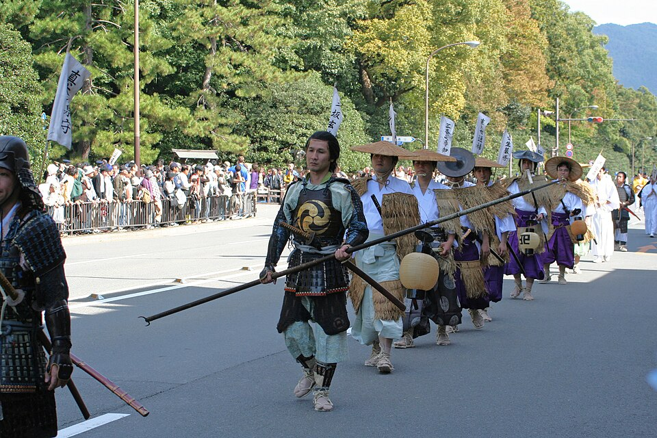
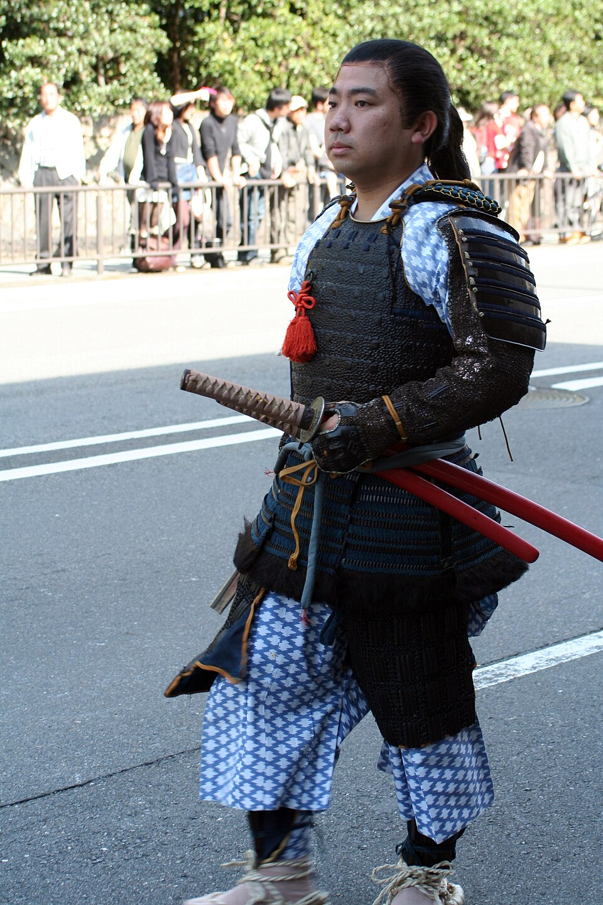
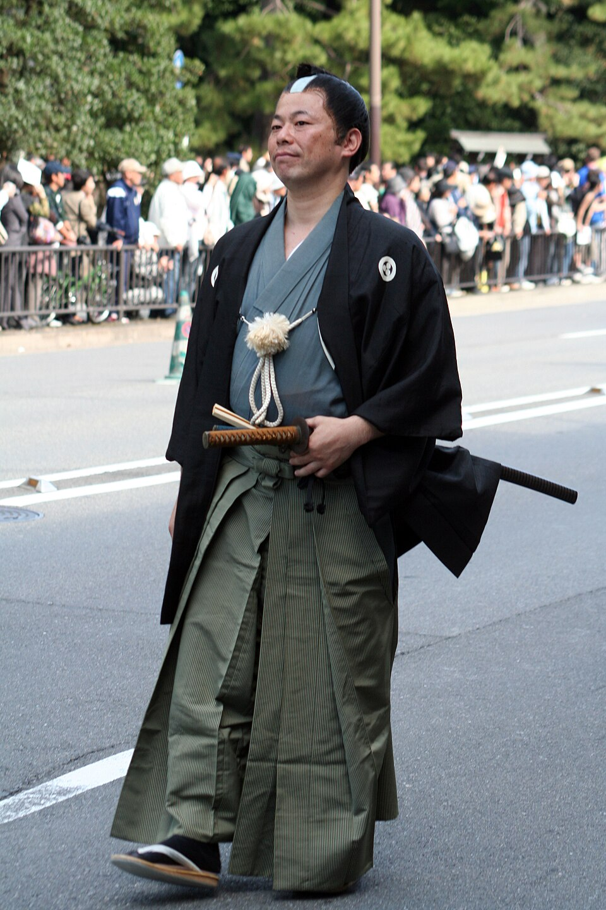
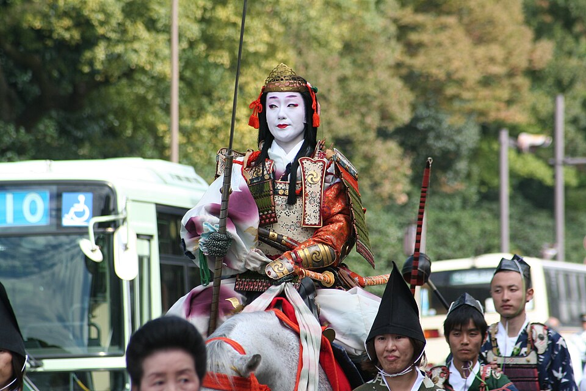
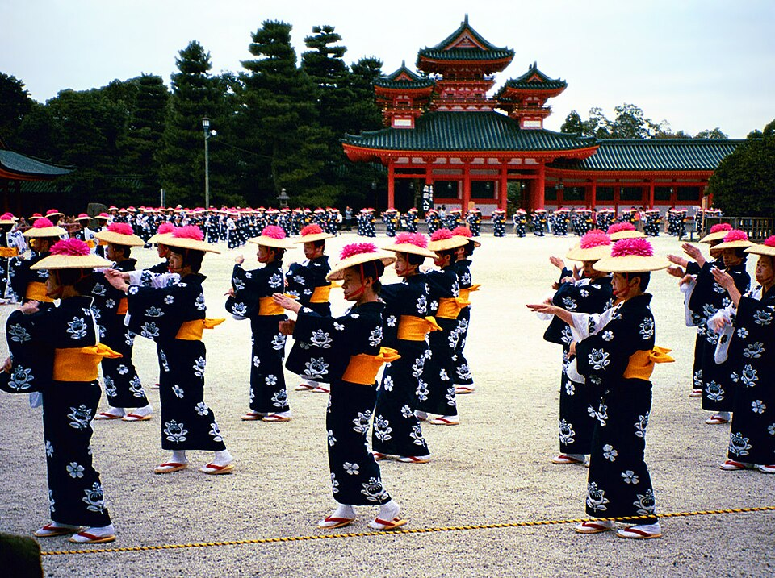

Jidai Matsuri - шествие эпох





Процессия в хронологическом порядке проходит всю историю Kyoto: от периода Мэйдзи (конец XIX века) в начале колонны назад через эпохи Эдо, Адзути-Момояма, Муромати, Камакура и до периода Хэйан (VIII-XII века) в конце. Каждый костюм и доспех - историческая реконструкция, которую готовят целый год разные районы и общества города. Женские роли (придворные дамы, Tomoe Gozen) традиционно исполняют сами жительницы Kyoto.
Фестиваль отмечает основание Kyoto как столицы в 794 году, проводится с 1895 года организацией Heian Jingu Hoshokai. Старт - Kyoto Gyoen (Императорский парк), финиш - святилище Heian Jingu, около 4,6 км, вся колонна проходит точку примерно за 2 часа.
Карта шествия
Красная линия - маршрут колонны, кружки - контрольные точки со временем, когда мимо идёт голова колонны. Хвост проходит каждую точку примерно на 2 часа позже. Синие метки 🎟 - площадки с платными местами: нажми, там время, когда быть и как купить. Оранжевая метка - где примерно сейчас голова и хвост, это оценка по официальному расписанию, а не трекер.
Расписание по контрольным точкам
| Время | Место | |
|---|---|---|
| 12:00 | Kyoto Gyoen, ворота Kenrei-mon - старт колонны | 📍 карта |
| 12:15 | Sakaimachi-gomon | 📍 карта |
| 12:30 | Karasuma-Marutamachi | 📍 карта |
| 12:50 | Karasuma-Oike - метро Karasuma + Tozai, станция Karasuma Oike | 📍 карта |
| 13:20 | Kawaramachi-Oike | 📍 карта |
| 13:30 | Kawaramachi-Sanjo - рядом с Gion | 📍 карта |
| 13:40 | Sanjo Ohashi (мост) | 📍 карта |
| 14:10 | Sanjo-Jingu-michi - подход к Heian Jingu | 📍 карта |
| 14:30 | Heian Jingu, ворота Otenmon - финиш, прибытие колонны | 📍 карта |
Время по таблице - ориентировочное, из вторичных источников. Официальный документ организатора на 2026 год называет только 3 опорных времени: Kyoto Gyoen 12:00, Karasuma-Oike 12:50, Jingu-michi (Heian Jingu) 14:20 - на них и стоит ориентироваться в первую очередь. При дожде 22.10 перенос на 23.10 - решение объявляют рано утром в день праздника, официально проверить можно на X-аккаунте Kyoto City Tourism Association или по тел. 075-213-0020.
Где смотреть и платные места
Платные места есть на трёх площадках (официальная страница, проверено 22.10 11:20):
| Площадка | Голова колонны | Как купить |
|---|---|---|
| Kyoto Gyoen (старт) | 12:00 | онлайн-продажа закрыта (PIA 22.10 11:21); только на месте, штабная палатка (本部テント) у блока 6, южная сторона, у ворот Sakaimachi-gomon; метро Marutamachi |
| Oike-dori у мэрии (Kyoto City Hall, между Teramachi и Kawaramachi) | ~13:20 | продажа закрыта в 12:00 (PIA 12:01). Было: 7-Eleven (автомат multicopy, P-код 661-579, оплата на кассе) или онлайн PIA с регистрацией, потом печать в 7-Eleven. На 11:21 первый ряд распродан, со 2-го ряда 5 000 ¥ в продаже. Вход с 12:00, сесть до 12:50. Метро Kyoto Shiyakusho-mae |
| Jingu-michi у Heian Jingu (финиш) | ~14:20 | так же, как Oike-dori; на 11:21 со 2-го ряда в продаже. Вход с 13:00, сесть до 13:50 |
Цены 2026: первый ряд 7 500 ¥, со второго ряда 5 000 ¥. В Kyoto Gyoen блоки 1 и 4 - "manabi" с лектором на японском (10 500 / 8 500 ¥). Особое место у ворот Otenmon на финише - 15 500 / 13 500 ¥. Во всех местах гидбук. Зонты и штативы на местах запрещены, при дожде нужен дождевик. Время 12:50 у Karasuma-Oike - это перекрёсток, где колонна поворачивает на Oike-dori; до платных мест у мэрии она доходит ~13:20.
Как выглядят места - официальные фото: Kyoto Gyoen (ряды складных стульев за красно-белым ограждением на гравийной аллее парка, без навеса), Oike-dori (стулья вдоль широкой улицы, за спиной городские здания), Jingu-michi (у большого тории Heian Jingu, очень людно). Схемы мест: Gyoen, Oike, Jingu-michi.
Бесплатно - стоя у ограждения вдоль любой улицы маршрута.
Видео


Фото: Wikimedia Commons (лицензии под каждым фото). Расписание - по туристическим источникам Kyoto (ja.kyoto.travel, rurubu.jp), сверено 21.10.2026 - точное время может сдвигаться, официально не публикуется поминутно. ← к маршруту